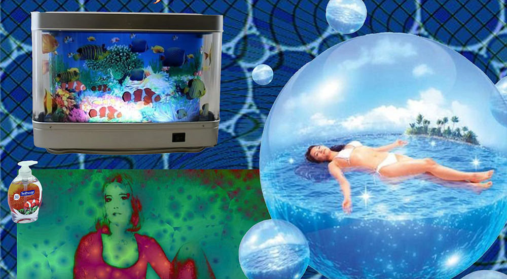

. . . . . . . . . . . . . . . intraBarf . . . . . . . . . . . . . .
intraBarf, 2025
-+> Html, Css, JavaScript <+-
-+> an experimental labyrinth, exploring my perosnal archive as well as my relationship to the internet. <+-
